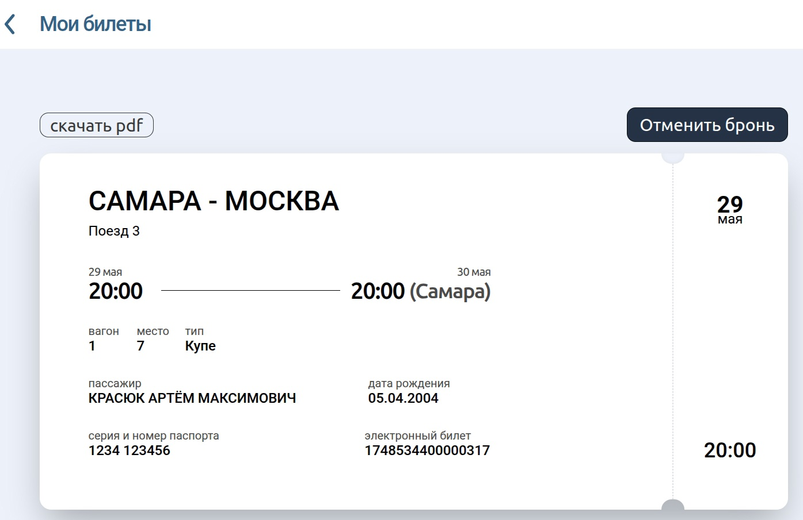
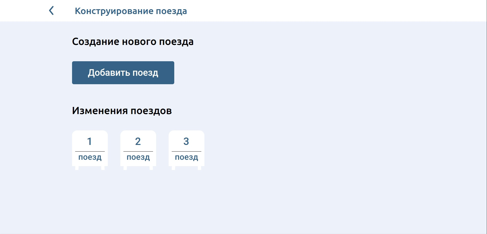

Назад на главную
Система предназначена для бронирования железнодорожных билетов через веб-интерфейс. Поддерживает функции поиска рейсов, выбора вагона, места, оформления и скачивания электронных билетов. Программа использует клиент-серверную архитектуру и базу данных PostgreSQL для хранения информации о пользователях, поездах, вагонах, местах и бронированиях. Обмен данными с сервером происходит через HTTPS в формате JSON. Электронные билеты формируются в формате PDF. Системные требования: Сервер: PostgreSQL 10, Docker 28.1.1, JRE 11+ Клиент: Windows 10+, браузер с поддержкой HTML5, CSS3, JavaScript.
Система поддерживает регистрацию новых пользователей и вход по логину/паролю для клиентов и администраторов. При успешной авторизации пользователю предоставляется интерфейс с функциональностью, соответствующей его роли: гость может просматривать расписание и справочную информацию, клиент получает доступ к личному кабинету, бронированию и истории заказов, администратор управляет расписанием, поездами, составами, базой данных. Данные для входа сверяются с зашифрованной информацией в базе данных. При вводе неверных данных система выводит соответствующее сообщение об ошибке. При запуске программной системы открывается главная страница сайта.Пользователи входят в систему по логину и паролю. В зависимости от роли (гость, клиент, администратор) открывается соответствующий интерфейс. Пароли хранятся в зашифрованном виде. При ошибке ввода — сообщение о неверных данных.
Эта часть системы служит для работы с незарегистрированными пользователями, которые только знакомятся с системой. Обеспечивает такие функции как: просмотр расписания поездов; использование фильтров для поиска рейсов; ознакомление с типами вагонов и ценами; доступ к справочной информации о системе.
Главная страница содержит поиск билета по датам и направлениям, раздел с расписанием, справочные разделы.
Для подбора билета можно воспользоваться формой поиска билетов, включающей поля для ввода пункта отправления и назначения, выбора даты отправления. Поиск будет осуществляться путем нажатия на кнопку подбора билетов, после чего система должна будет отобразить страницу с результатами поиска.
В разделе «Расписание» отображается список доступных рейсов поездов. Каждый элемент списка включает информацию о маршруте, времени отправления и прибытия, а также стоимости билета. В верхней части раздела расположены фильтры для удобного поиска рейсов. Система предоставляет возможность отфильтровать рейсы по городу прибытия, дате отправления и наличию свободных мест. Фильтр «Город» содержит выпадающий список с перечнем доступных направлений. Фильтр «Дата» отображает календарь для выбора желаемой даты отправления. Фильтр «Есть свободные места» позволяет отобразить только те рейсы, на которых имеются доступные для бронирования места. В правой части каждого элемента списка рейсов располагается кнопка «Выбрать дату» с указанием доступных дат отправления. При нажатии на данную кнопку система отобразит форму с более подробной информацией о рейсе и предоставить возможность выбора конкретной даты и времени отправления для бронирования билета.
При скроллинге страницы, будут отображаться разделы с расписанием и информацией о разработчиках (раздел «о нас»). Нажатие на соответствующие кнопки, расположенные в левой верхней части интерфейса, автоматически будет пролистывать страницу до нужного раздела. В нижней части экрана, на темном фоне, указаны имена участников команды разработчиков.
На странице отображается список доступных рейсов, соответствующих заданным критериям поиска. В левом верхнем углу экрана находится надпись «Поезда» и стрелка "‹", при нажатии на которую система должна будет отобразить главную страницу. В верхней части экрана располагается форма для изменения параметров поиска. Она дублирует форму поиска с главной страницы и позволять пользователю ввести новые города отправления и прибытия, а также даты поездки, чтобы подобрать новый маршрут. После внесения изменений пользователь сможет нажать кнопку «Подобрать», после чего система должна будет обновить список рейсов в соответствии с установленными фильтрами. Ниже формы поиска расположены дополнительные фильтры: дата отправления, тип вагона (купе, СВ, сидячий, плацкарт) и наличие свободных мест. Каждый элемент списка рейсов содержит следующую информацию: номер поезда, время отправления и прибытия (с указанием даты прибытия), а также доступные типы вагонов с указанием минимальной цены. В правой части каждого элемента расположена кнопка "Выбрать места", при нажатии на которую пользователь переходит к форме выбора конкретных мест в вагоне.
В верхней части страницы представлены кнопки-вкладки для выбора типа вагона («Купе», «СВ», «Сидячий», «Плацкарт»), рядом с каждой кнопкой будет указана минимальная стоимость билета в данном типе вагона. Ниже отображается схема вагона выбранного типа. Для каждого типа вагона будет отображаться номер вагона, количество мест и диапазон цен на места. На схеме вагона визуально представлены места, где пользователь сможет выбрать желаемое место. Также под схемой вагона указана информация о включенном в стоимость билета постельном белье, а также наличие кондиционера. По бокам от схемы вагона расположены стрелки навигации, позволяющие переключаться между схемами соседних вагонов (следующего и предыдущего). После выбора желаемых мест и нажатия кнопки "Забронировать" расположенной в нижней части выбранного вагоны, система отобразит страницу ввода данных о пассажире, если пользователь авторизован. Иначе, система должна будет отобразить страницу авторизации.
На странице ввода данных о пассажире в левом верхнем углу страницы находится надпись «Данные пассажира» и стрелка "‹", при нажатии на которую система должна будет отобразить страницу выбора мест в вагоне. В центре экрана расположен заголовок "Заполните данные". Ниже находится форма, разделенная на блоки для ввода персональной информации о пассажире: фамилия, имя, отчество, пол (радиокнопки "М" и "Ж"), дата рождения (с использованием маски ввода), паспортные данные (с использованием маски ввода), мобильный телефон, электронная почта. Под формой располагается чекбокс "Даю согласие на обработку персональных данных" (обязательное поле для согласия с политикой конфиденциальности). В нижней части страницы находится кнопка "Продолжить", при нажатии на которую система должна будет отобразить страницу со следующим этапом бронирования – страницу подтверждения заказа.
На странице подтверждения бронирования в левом верхнем углу находится надпись «Подтверждение бронирования» и стрелка "‹", при нажатии на которую система отобразит предыдущую страницу – страницу с вводом данных о пассажире. В центре страницы расположен заголовок "Подтвердите бронирование" и подзаголовок "Проверьте введенные данные". Ниже представлена сводная информация о бронировании, разделенная на два блока: о выбранных местах и о пассажире. Под блоками с информацией о бронировании располагается надпись "При нахождении опечатки в данных вернитесь на предыдущую страницу для исправления", призывающая пользователя внимательно проверить введенные данные. В нижней части экрана находится кнопка "Подтвердить", при нажатии на которую система подтверждает бронирование и отображает страницу раздела «Мои билеты». Переход к административной части веб-приложения будет осуществляться напрямую через адресную строку браузера. После перехода по соответствующему адресу система отобразит страницу авторизации администратора.
Эта часть системы служит для работы с зарегистрированными пользователями (клиентами), которые бронируют билеты и управляют своими данными. Обеспечивает такие функции как: вход в систему по логину и паролю; доступ к личному кабинету; редактирование личных данных (ФИО, телефон, email, пароль); просмотр и скачивание электронных билетов; отмена бронирований; просмотр истории заказов; смена пароля и выход из аккаунта. Клиенты видят только свои данные и могут управлять только собственными бронированиями.
Страница входа в систему позволит пользователю авторизоваться, введя адрес электронной почты и пароль. После заполнения полей и нажатия на кнопку входа система должна проверить учетные данные, и в случае успешной аутентификации отобразить предыдущую страницу. В правой части страницы размещена информация для новых пользователей с предложением пройти регистрацию. При нажатии на кнопку регистрации система отобразит форму создания новой учетной записи.
На странице регистрации пользователь сможет создать учетную запись, заполнив необходимые поля, включая фамилию, имя, отчество, адрес электронной почты и пароль, и подтвердив пароль. После ввода данных и нажатия на кнопку регистрации система должна будет обработать введенные данные, и в случае успешной проверки учетная запись будет создана. Затем система отобразит предыдущую страницу. В левой части экрана будет размещен блок с предложением авторизоваться для пользователей, у которых уже есть учетная запись. При нажатии на кнопку входа система должна будет отобразить страницу авторизации.
На странице личного кабинета пользователя в верхней части страницы будет отображаться информация о пользователе, включая фамилию, имя, отчество, адрес электронной почты, дату рождения, номер телефона и пол. Эти данные могут быть изменены пользователем при необходимости. Ниже будет расположен раздел «Мои билеты», при нажатии на который система отобразит страницу, где пользователь может просматривать информацию о своих текущих и прошлых бронированиях. Также в личном кабинете будут предусмотрены функции смены пароля и выхода из профиля, при нажатии на эти разделы система будет отображать соответствующие всплывающие окна. В левом верхнем углу экрана находится надпись «Личный кабинет» и стрелка "‹", при нажатии на которую система должна будет отобразить главную страницу.

На странице «Мои билеты» отображается визуальное представление билета с информацией о нем, включая маршрут, номер поезда, дату и время отправления, номер вагона и места, тип вагона, а также данные пассажира (фамилия, имя, отчество, серия и номер паспорта, дата рождения). Также указаны дата и время прибытия, номер электронного билета. Над билетом расположены две кнопки: «Скачать PDF» с левой стороны и «Отменить бронь» с правой стороны. Кнопка «Скачать PDF» позволит пользователю сохранить информацию о билете в формате PDF для дальнейшего использования. Кнопка «Отменить бронь» предоставит возможность отменить текущее бронирование при подтверждении действия во всплывающем окне. В левом верхнем углу экрана находится надпись «Мои билеты» и стрелка "‹", при нажатии на которую система отобразит предыдущую страницу.
В верхней части всплывающего окна смены пароля расположен заголовок «Сменить пароль» и требования к паролю. Ниже располагаются поля для ввода текущего пароля, нового пароля и подтверждения нового пароля. При нажатии на кнопку «Сменить», система будет проверять корректность введенных данных, в случае успешной проверки пароль будет изменен. В правой верхней части экрана расположен крест "×", при нажатии на который, система должна закрыть окно смены пароля.
Эта часть системы служит для работы с администраторами, управляющими структурой и данными системы. Обеспечивает такие функции как: авторизация администратора; добавление, редактирование и удаление расписаний; управление базой данных (поезда, вагоны, билеты, пользователи); конструирование схем вагонов и составов поездов; изменение параметров рейсов (дата, время, город назначения и др.); настройка цен и фильтров; контроль корректности расписания и состава поездов; визуализация схем вагонов при редактировании.
Эта страница предназначена для администраторов, отвечающих за конструирование поездов. На странице предоставлено создание и изменение позедов. Создание нового поезда происходит помле нажатия кнопки "Добавить поезд". Для измениния поезда нужно нажать на необходимый, чтобы перейти к редактированию.
Для создания нового поезда задать номер вагона, тип вагона и количество купе, учитывая ограничения. После этого нажать "Добавить вагон". После создания необходимого количества вагонов создается поезд через кнопку "Создать поезд".
После создания вагона его можно будет удалить,нажав на кнопку "удалить вагон" над схемой этого вагона.
Эта страница предназначена для администраторов, отвечающих за создание и редактирование рейсов поездов. Она предоставляет интерфейс для управления списком актуальных рейсов, с возможностью: просмотра текущих маршрутов (например, Самара — Москва, Самара — Казань); отображения даты и времени отправления и прибытия; отображения номера состава поезда; изменения параметров рейса через кнопку «Изменить рейс»; удаления рейса из расписания через кнопку «Удалить рейс»; добавления нового рейса с помощью кнопки «Добавить рейс». Интерфейс выполнен в виде таблицы или карточек, каждая из которых содержит маршрут, время отправления и прибытия, а также управляющие кнопки. Изменения, внесённые на этой странице, отражаются в системе бронирования для клиентов.
В всплывающем окне добавления рейса расположены поля для ввода номера поезда, города назначения, даты отправления, время отправления, даты прибытия и времени прибытия. Ниже распологается кнопка добавления этого рейса. В правой верхней части экрана расположен крест "×", при нажатии на который, система закроет это окно.
В всплывающем окне изменения рейса расположены поля для ввода номера поезда, города назначения, даты отправления, время отправления, даты прибытия и времени прибытия. Ниже распологается кнопка изменения этого рейса. В правой верхней части экрана расположен крест "×", при нажатии на который, система закроет это окно.